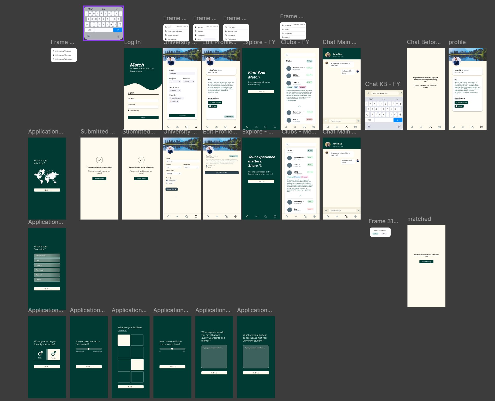

Match · First-Year
Mentorship App
A B2B mentorship platform designed for universities to reduce first-year attrition. Built end-to-end in 4 hours — grounded in personal experience and a hard lesson about what happens when a team forgets to align before they build.
First-year attrition isn't a student problem. It's a revenue problem.
First-year university students have one of the highest attrition rates of any student cohort. For universities, this isn't just a pastoral concern — every student who drops out represents tens of thousands of dollars in lost tuition revenue, plus the reputational cost of low completion rates. Despite this, most institutions rely on orientation week and passive club fairs as their primary retention strategy.
The research showed something more specific: students don't leave because academics are too hard. They leave because they feel invisible. They don't know anyone in their program, they have no upper-year guidance, and they hit a wall in week six with nobody to talk to.
I didn't have a mentor in first year. I figured it out the hard way, and I watched people around me not figure it out at all. That's the problem we were designing for.
— Personal research insight
A zero-headcount retention system for universities.
The core commercial insight: universities already have the resource they need sitting in their second, third, and fourth-year students. Match doesn't add headcount or cost. It organizes existing human capital into a structured retention system and gives institutions a measurable engagement metric they didn't have before.
The prototype — built in 4 hours.
We designed two complete user flows: mentor application and mentee onboarding. Both were necessary. A mentee-only design would have been half a product. Matching was built around program, year of study, and shared interests — not availability or geography.
Onboarding · Application Flows

Institution selection, SSO login, and differentiated application forms for mentors vs. mentees
Core Experience · Chat · Matching

Profile editing, explore feed, clubs directory, mentor-side matching dashboard, and direct messaging
Chat States · Edge Cases

Active conversation view, keyboard interaction state, and the empty state shown before a match is confirmed
In 4 hours, you research with what you have.
Formal user research wasn't feasible in a 4-hour sprint. But we had two legitimate inputs that shaped every design decision.
Personal experience
Both team members went through first year at UTM. The question I kept asking myself: was it academic pressure or social disconnection that felt worse? For me it was social disconnection. That answer determined what we built.
Peer observation
We watched people around us who didn't make the transition. The common thread wasn't academic ability — it was lack of connection in the critical first eight weeks.
If I had two weeks, I would have run structured interviews with five to eight students. The single question I'd have led with: "Was it academic pressure or social disconnection that almost broke you in first year?" The answer determines whether Match is solving the right problem or a comfortable-sounding one.
After the competition: what Match could really look like.
After the designathon ended, we went back to Figma with fresh eyes and more time. This is the refined version — a higher-fidelity prototype that properly communicates what we actually meant to build. The dark green palette, refined typography, and polished UI components are what Match looks like when we had time to execute the vision properly rather than race against a 4-hour clock.
Key improvements over the original: a cleaner onboarding flow with distinct mentor and mentee application paths, a richer explore feed for campus events and clubs, a real-time chat system with keyboard states and empty states designed, and a proper matched confirmation screen that makes the moment feel meaningful.
Final Figma Prototype — All Screens

Full prototype overview — onboarding, application, explore, clubs, chat, profile, and matched confirmation flows
We had the right ideas. We just never said them out loud to each other.
I'll be honest about what actually happened in that room. The thinking was there. But we shipped a presentation that tried to show everything instead of leading with the one insight that made Match worth building. The judges saw a club discovery app with mentorship bolted on. That wasn't the product we designed — it was the product our presentation accidentally described.
Part of that was a communication failure inside the team. I worked on the Figma prototype alongside one teammate. Another handled the slides independently. We all shared the same big idea — but we never stopped to align on the details before we walked into the room. When we presented, the product narrative in the slides was slightly off from the design decisions in the prototype, and the judges felt that inconsistency even if they couldn't name it.
Having the same big idea isn't the same as being aligned. Alignment means saying it out loud to each other before you say it to anyone else.
The other lesson: lock the one thing the product does and never let it drift. If I walked into that room again, I'd spend the first 30 minutes writing one sentence: Match helps first-year students find an upper-year mentor who took the same path they're on. Then I'd make sure every person on the team could repeat that sentence before we opened Figma.
I'd also have tackled the blank canvas problem. You can build the most elegant matching algorithm in the world — it fails the moment a mentee stares at an empty message box and closes the app. Version two includes a structured first-message prompt. Something like: "Ask your mentor one question about your first semester." Remove the friction of that moment and your activation metric changes overnight.